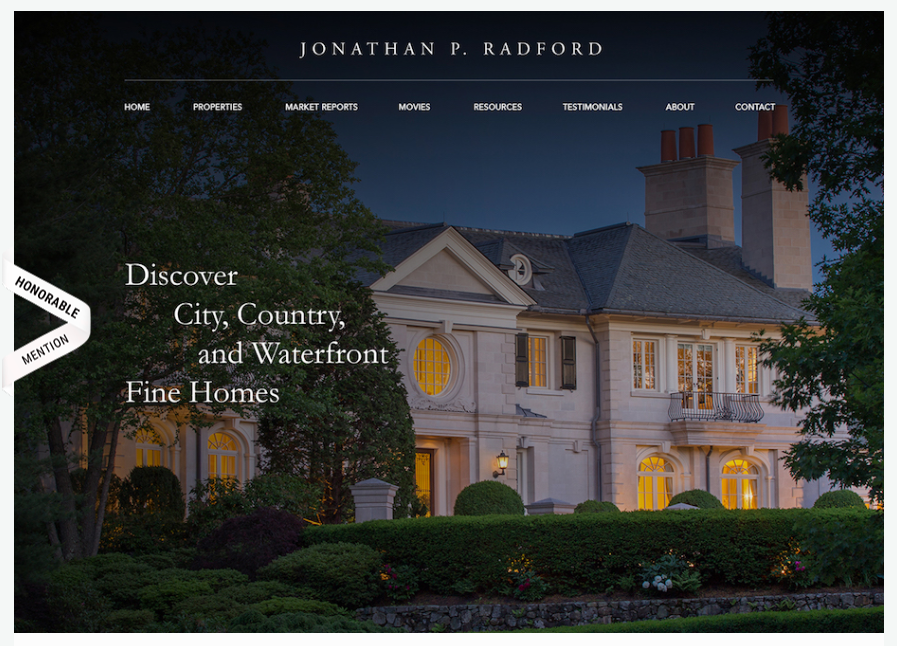
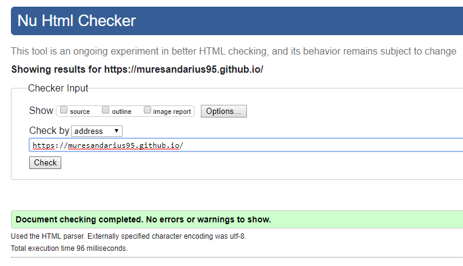

Team
I am Darius Muresan - a student at the University of Northampton. Being very passionate about web design and internet, I decided to study Business Computing (Web Design)
and I am constantly learning about Front End Development and Responsive Design.
This is my project for the first assignment of the Web Design module (year one).
I’m Sebastian Matysiak and I’m 20 years old. Originally, I come from Poland. However, I’ve been living in UK for around one and a half years. I’m passionate about IT hence
I decided to study Computing. I’m on Web Technology and Security pathway.
I enjoy playing computer games as well as football.
Web Development Terms
Front End Development:
The part of the web development that focuses on creating the layout, also known as interface for the user.
HTML (HyperText Markup Language):
Sometimes confused with a programming language, is a markup language for creating web pages and web applications.
It describes the structure of a webpage and it needs CSS and Javascript for more features like advanced styling, animations and functionality.
CSS (Cascading Style Sheets):
A style sheet language used for styling HTML pages. It can help us do many things like creating a layout,
use fonts (either the standard ones or external), use colors, place things at certain positions on the web page, create a responsive design and not only.
Google Fonts:
A website developed by Google that provides fonts for web developers in order to use them in projects.
The fonts are free to use because most of them have been released under the SIL Open Font License and the Apache License which are free software licenses.
They are stored on Google servers (CDN) so you need to declare the link in your HTML document in order to use them and they usually have
a specific load time (depending on how many web pages are using the desired font).
Responsive Web Design:
A relatively new approach in web development which helps users to access the website from any device
without suffering any unpleasant experience-related problems. In the past, most of the websites had two versions: the mobile version
and the desktop one so the user had to choose between those two. Thanks to this concept, websites can now adapt to any screen size,
either if it is a wide-screen monitor, a tablet or a small smartphone without causing any problems or losing/hiding content. It is based on fluid grids,
flexible images and media queries.
CDN (Content Delivery Network):
A system of distributed servers that delivers web content to users, based on geographic locations
in order to load quickly. The content can include: frameworks, fonts, media and even whole websites.
HTPP:
Stands for HyperText Transfer Protocol. HTTP is a set of rules for transferring hypertext requests between a web browser and a web server.
Accessibility:
Basically, this is the ability of a website to be used by people with disabilities, including visually impaired visitors using
screen readers, hearing impaired visitors using no sound, color blind people, or those with other disabilities.
DOCTYPE:
The doctype declaration specifies which version of HTML is used in a document. It has a direct effect on whether your HTML will validate.
Navigation:
The navigational elements that appear on a website. While it primarily refers to the “menu bar” located at the top of a website or along
either side, it can also include textual links at the bottom of the page.
User Experience (UX):
The interaction a user has with an interface. From a planning perspective, the user experience is typically defined in
wireframes, but every aspect of the web design and development process—from wireframing to copywriting to design to programming—affects the user experience.
User Interface (UI):
User interface design (UI) or user interface engineering is the design of user interfaces for machines and software, such as
computers, home appliances, mobile devices, and other electronic devices, with the focus on maximizing usability and the user experience. The goal of user
interface design is to make the user's interaction as simple and efficient as possible, in terms of accomplishing user goals (user-centered design).
Material Design
Material Design (codenamed Quantum Paper) is a design language developed in 2014 by Google. Expanding upon the "card" motifs
that debuted in Google Now, Material Design makes more liberal use of grid-based layouts, responsive animations and transitions, padding, and depth effects
such as lighting and shadows.
Adobe Photoshop:
Adobe Photoshop is a raster graphics editor developed and published by Adobe Systems for macOS and Windows.
Photoshop was created in 1988 by Thomas and John Knoll. Since then, it has become the de facto industry standard in raster graphics editing, such that the
word "photoshop" has become a verb as in "to Photoshop an image," "photoshopping" and "photoshop contest", though Adobe discourages such use.
Wireframe:
A website wireframe, also known as a page schematic or screen blueprint, is a visual guide that represents the skeletal framework
of a website. Wireframes are created for the purpose of arranging elements to best accomplish a particular purpose. The purpose is usually being informed
by a business objective and a creative idea.
DOM:
Stands for Document Object Model. It’s a language-indpendent, cross-platform convention for representing objects in XML, XHTML, and HTML
documents. Rules for interacting with and programming the DOM are specified in the DOM API.
EM:
Em is a unit of measurement for sizing fonts and other elements within a web page relative to the item’s parent element. A 1em font is
equal to the point size for the font already defined in the parent element (2em would be twice the current size; .5em would be half the current size).
Landing Page:
A landing page is the page where a visitor first enters a website. Oftentimes, a special landing page is created to elicit a specific
action from the new visitor (usually in connection with an advertising or marketing campaign).
Pseudo-Element:
A pseudo-element is an element used to add a special effect to certain selectors.
Selector:
In CSS, the selector is the item a style will be applied to.
URL:
Stands for Uniform Resource Locator. A site’s URL is its address, the item that specifies where on the Internet it can the found.
Web Standards:
Standards are specifications recommended by the World Wide Web Consortium for standardizing website design. The main purpose
of web standards is to make it easier for both designers and those who create web browsers to make sites that will appear consistent across platforms.
Animation:
The process by which a set of images simulate movement when they are shown in a specific order.
Form:
A collection of fields that are filled with data and submitted.
Chrome DevTools:
The Chrome Developer Tools (DevTools for short), are a set of web authoring and debugging tools built into Google Chrome.
The DevTools provide web developers deep access into the internals of the browser and their web application.
Sources:
Jobs Comparison
The tech sector has grown in the last few years dramatically due to the high demand of digitalized solutions for businesses, healthcare,
schools, government and many other kind of organizations. There are many sub-divisions in this field, that include: cyber security,
telecommunications, data analysis, software engineering, hardware engineering, game development, web design/development, networking
and the list could go on. It is a constantly changing industry, so the people that are working in the field need to keep their training
'up to date' in order to do their best.
I am going to compare 3 sub-divisions that each have a different purpose but somehow, at some point, they connect.
Game Developer, Database Administrator and Web Designer/Developer
A game developer is involved in creation and production of games for different platforms (computers, consoles, hand-held devices).
There are several stages in developing games such as programming, designing, testing and solving problems that may occur and maintaining
the game. They usually work in offices or studios or they can work on their own as freelancers and depending on their their specialist
area, they may travel overseas sometimes. A strong interest in games and programming skills are essential to do this job, besides the
creative part which is vital but not only in games development, but in the web development field as well.
Comparing a game developer to a database administrator, we can spot some different skills on each other.
A database administrator usually deals with maintaining the security and integrity of the database
and he or she may be involved in the development. They usually work with low to huge amounts of data which has to be stored correctly
and to be easy to retrieve by the final user. As they don't actually need the same skills as game developers, attention to detail
is crucial in both jobs.
Web designers or web developers are involved in designing, developing and maintaining web pages or web applications. They usually
work in offices or self-employed as freelancers. Depending on which side they are working on, they might have a few things in
common with game developers and database administrators. Web developers can work with game developers to create browser games
(e.g. Travian, Agario, Tribes, and many others) or they can do the back-end job, which includes setting up and configuring databases.
Resources
When it comes to learning web design, there are plenty of resources on the internet like courses, tutorials, code snippet websites,
forums and so on.
Most of them are free to use and easy to access.
W3Schools is the most popular website for learning web technologies. It provides tutorials for learning HTML, CSS, JavaScript,
PHP, Bootstrap, AngularJS, SQL and jQuery. Created in 1998, it now serves more than 10 million users monthly.
Udemy is an online learning platform which provides courses on different subjects. The courses are usually taught by teachers
through video lessons and hands-on practice. Using Udemy’s course development tools they can upload video, PowerPoint presentations,
PDFs, audio, zip files and live classes to create courses. Instructors can also engage and interact with users via online discussion boards.
There are a lot of lessons on Udemy about web design on different topics such as: responsive design, JavaScript, frameworks,
back-end technologies and the list can go on.
Codepen is an online community for sharing and showcasing HTML, CSS and JavaScript snippets. It was founded in 2012 and is
one of the largest communities for web designers and developers.
It acts like an online editor where developers create code
snippets (pens), test and share them. It has a minimalist design and is very easy to use.
Stackoverflow was founded in 2008 and is the largest online community for developers to learn, share their knowledge and build their career.
It has more than 50 million active users each month, 14 million questions and more than 19 million answers. The website is designed more
like a forum where developers answer the questions and answers get votes depending on how useful they are.
MGP
I always liked the concept of one-page websites and that's why I chose to do the same thing for my first assignment. Not only that is very easy to navigate,
because you use just the mouse scroll button or a finger on mobile version, but it looks and feels professional and clean. My source of inspiration was
AWWWARDS.com, the place that is a delight for my eyes every time I visit it.
For the navigation, header and footer
I've chosen the 12-column layout and for the content (the "pages" inside the page), 8 columns. But why?... mainly because I think nowadays this is the standard
and more than 80% percent of the new web pages, or at least blogs, social media and news websites have the same structure because it is very easy for the visitor
to read. As you can see, I left plenty of white space because no one wants their eyes to get tired after visiting just one website.
The header has a 100%
viewport height to act like a landing page before scrolling down to the content. I've used a background image of a keyboard because that is the most used tool by
developers. The navigation is clean and simple with a simple background color effect when hovered.
Media queries
To make the page responsive to all devices, I have used media queries and a few tricks to make it possible. When it is accesed from tablets and smart phones,
the navigation shrinks to a "hamburger" button that contains all of the items and the footer boxes stack one on top of the other to make the overall design
adapt nicely.
Inspiration:

Log
This semester I started to learn what I like the most: Web Design.
It's been a nice "journey" to learn the basic and intermediate front-end web development
skills by doing small steps each week in class but not only. In my opinion, when it comes to learning web design, the best way to learn is by doing, making mistakes,
drinking coffee, correcting them, making more mistakes, documenting yourself, and follow other great designers that have an impeccable portfolio and trying to build
on current design trends.
I am very proud of myself that I have learned to make a web page responsive without adding a framework such as Bootstrap
or Foundation, just by using CSS media queries. Another thing that I am proud of is that I learned to use Git and GitHub, the tools that used to scare me
a few months ago. Also, the Material Design principles are a web designer's must-have knowledge and they inspired me a lot.
My final impression is that this semester's web design module has opened my eyes and made me even more curious about this field
by encouraging me to experiment and learn from the current trends.
Validation:
